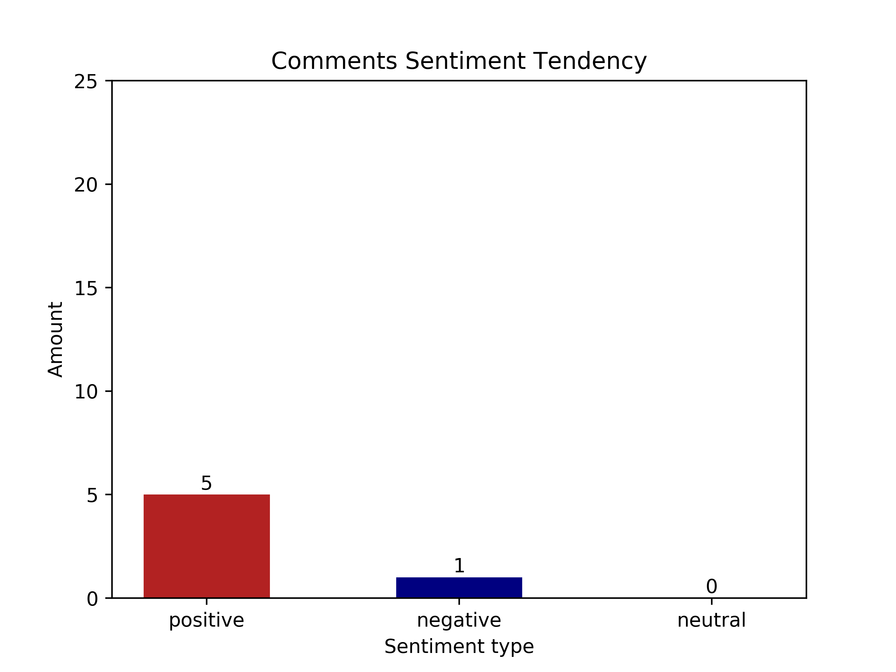
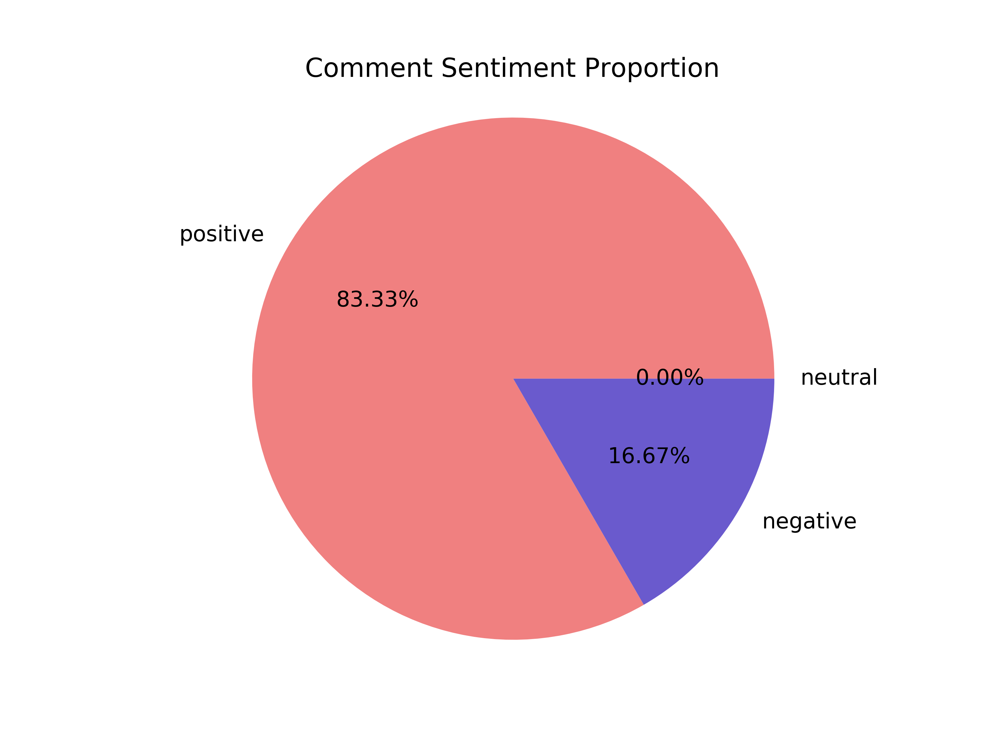

{# 设置浏览器不缓存#}
Video Comments
{{ bootstrap.load_css() }} {{ bootstrap.load_js() }}
视频 {{ bvid }} 的 Top10 热评
该视频共计： {{ count }} 条评论
评论rpid号
评论内容
发送者id
发送者昵称
发送时间
点赞数
{% for top_data in top_likes %}
{% for flag in ['rpid', 'msg', 'sender_id', 'sender_name', 'time', 'like'] %}
{{ top_data[flag] }}
{% endfor %}
{% endfor %}
{% if sensi_comments_list != [] %}
视频 {{ bvid }} 的 违规评论
{#
数据发布的时间: {{ liveData['lives'][0]['reporttime'] }}
#}
发送者id
发送者昵称
评论内容
敏感词
敏感词类型
发送时间
{% for sensi_data in sensi_comments_list %}
{% for flag in ['sender_id', 'sender_name', 'msg', 'sensi_word', 'sensi_type', 'time'] %}
{{ sensi_data[flag] }}
{% endfor %}
{% endfor %}
{% else %}
视频 {{ bvid }} 不含违规评论 ！！！
{% endif %}
视频 {{ bvid }} 的 评论情感倾向分析
 